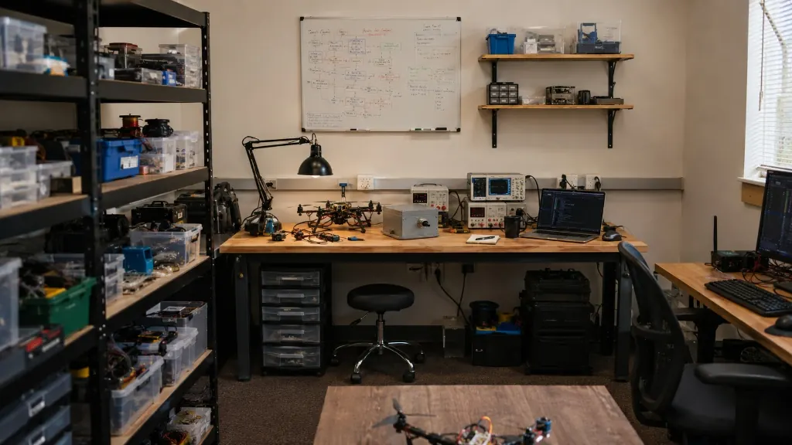

About
Engineering-first technology development.
Vortiq Dynamics helps businesses transform ideas into reliable technology systems, from connected devices to cloud platforms and intelligent applications.
How We Think
Build the architecture before the noise.
We approach every project as a system: hardware, firmware, data, cloud, interface, users, deployment, and long-term support all need to work together.
- End-to-end development
- Engineering-first approach
- Scalable architecture
- Support from concept to deployment
